Introduction to AP Computer Science A Course Breakdown
Course Director
Over 5 Hours Worth of Video
100+ Practice Problems
Interactive Projects
2
Primitive Data Types
The video below will give you a brief introduction into data types.
The 6 main data types we will be learning are the integer, double, string, character, boolean, and short. These will be the 6 main data types you will see.
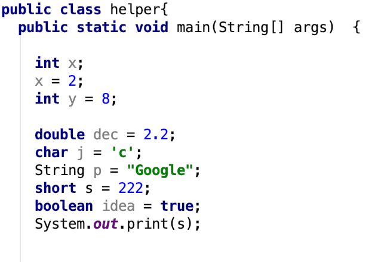The picture above shows how to declare and intialize data types.
Integer: The integer is declared and initialized by the key word int. The integer is used to store any integer that can be stored with at most 32 bits.
Short: The short is similar to the integer except, that it only uses 16 bits of memory, which means it will not be able to store as large numbers as an integer. The short is defined by the key word short and is used to optimize memory.
Double: The double is used to display decimals and can display larger numbers than the integer. The double is declared and initialized with the keyword double.
Character:The character data type is used mainly with encoding and can be used in various situations. The character data type can store any single letter character such as a or B as well as integers. The keyword for character declaration is char. It is important to note that the character a and A are not the same in Java because these 2 characters correspond to 2 different Ascii values. Also when initializing a character variable you must use the single quotes as shown above.
Boolean: The boolean is the easiest data type to understand. The boolean is characterized by the keyword boolean and can either equal true or false.
String: The String is slightly different from the other data types, because it is a non-primitive data type, but it is used very often in Computer Science. The keyword for declaring a string is String. With strings the S should be capitalized because the String is treated like an object. For the data types mentioned above the first letter in the keyword has to be lowercase. The differentiation between the String and the other data types is whatever value is used in the variable will be in double quotes, and you can have any value or character within these double quotes.

Conditionals
In this lesson we will be going over the conditional statements which include the: if statement, for-loop, and while loop.
The video below will give you a brief introduction into conditionals.
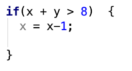The if statement is the main conditional statement that allows you to compare 2 different values or variables. The syntax for an if statement is shown above.
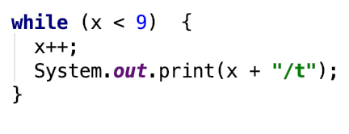The while loop is a loop that will run until a certain condition has been met. It is important to check the contents within the while loop in order to make sure that there is an eventual break in the loop. The syntax for a while loop is shown above.
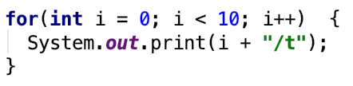The final conditional we will be learning is the for loop, which is similar to the while loop, except that the extent to which the loop is already defined within the argument. The syntax for a for loop is shown above and is used in many situations from arrays to binary search.
Understanding and Manipulating Arrays
In the video below, we will go over an introduction into arrays. Also if you scroll all the way down, there wil be another more in-depth video. Thank you.
In Java an array is a simple data structure with a fixed size and can store more than one element. The declaration and size of an array will be shown below. It is recommended that you understand for loops and while loops before starting arrays.
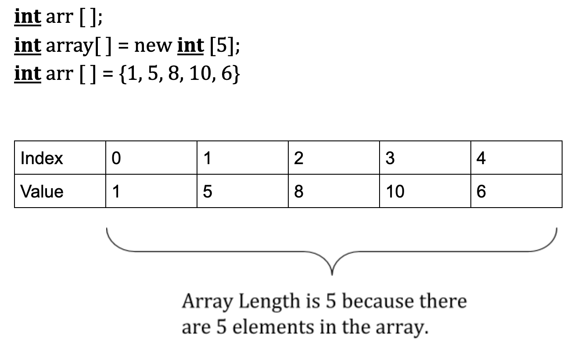The picture above provides the introduction to declaring and initializing an array.
The first line shows how to declare an array. The first part will be the data type and the second part will be the name of the array. It is important that the brackets are included, either after the data type or after the array name. The bolded data type can be replaced with any data type and even objects as long as it matches the data types of all the elements in the array.
The second and third line shows how to instantiate an array by allocating memory for it. The instantiation process is similar to declaring, except there is now an equals sign, and you have to specify the word new followed by the data type and then the brackets. The brackets have to contain an integer so that memory can be allocated. The third line shows how to manually place values into an array and the table shows the length of arr. In arrays, the first index is always referred to as index 0, and the last index will always be one less than the array length. One thing that will be touched on in the picture below which is how to obtain the length of the array, which is done by using the syntax array.length, where the word array is replaced by the name that you give to the array you are referring to.
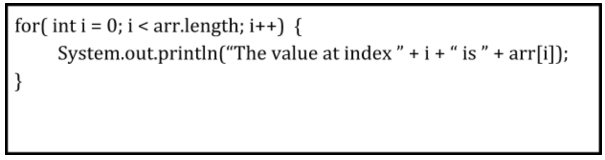The picture above shows how to use a for loop in order to traverse an array. The value of i starts at 0, because the first index in an array is 0, and will stop after iterating with the value 1 less than the array length. Also make sure the less than symbol is used in the for loop, or else you will receive an array outofBounds error.
Strings
The video below will give you a brief introduction into Strings.
The picture below shows how strings are broken down. It is similar to arrays, but not exactly the same. When we break up strings we put the break between 2 characters. So we would say that the F is between the 0 and 1 index.
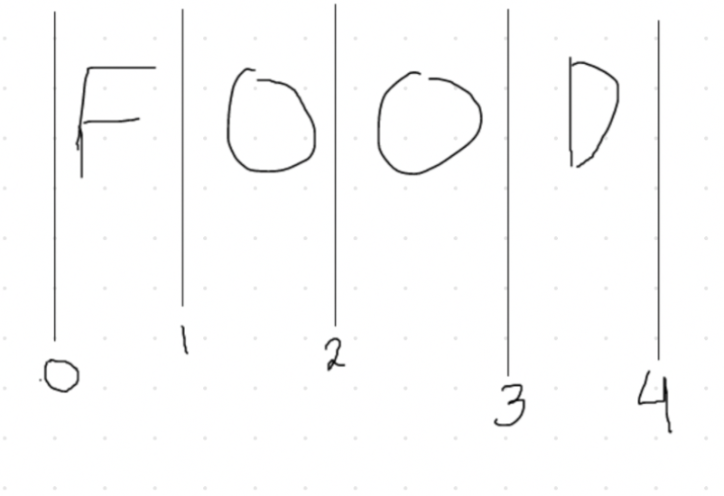The picture below shows all the various methods associated with Strings. The first method you will see is the .length() method, and remember Strings are treated like objects so you have to include the parentheses. The next method is the .substring method which has 2 different forms. The form on line 10 will print every number right of the line 3. So we would write Google, and make breaks similar to what we did in the first picture. This would print out gle. The substring method on line 11 will print out the characters between index line 3 and index line 5, so that line will print out gl. Then the indexOf method is a little more tricky as indices are not as restrictive as they are in arrays. So the indexOf method will return the line before the instance of the character or phrase you are looking for. Since gl occurs after index line 3, the indexOf method will return 3. The next 2 methods we will cover are the most commonly used methods in all of Strings. The first one is the .equals method which is meant to compare 2 strings and see if they are equal. The other method is the .toCharArray, which will turn the string into an array of characters. Also in line 23 I show how to turn a character array into a string. The final method is the .concat method which allows you to combine multiple strings.
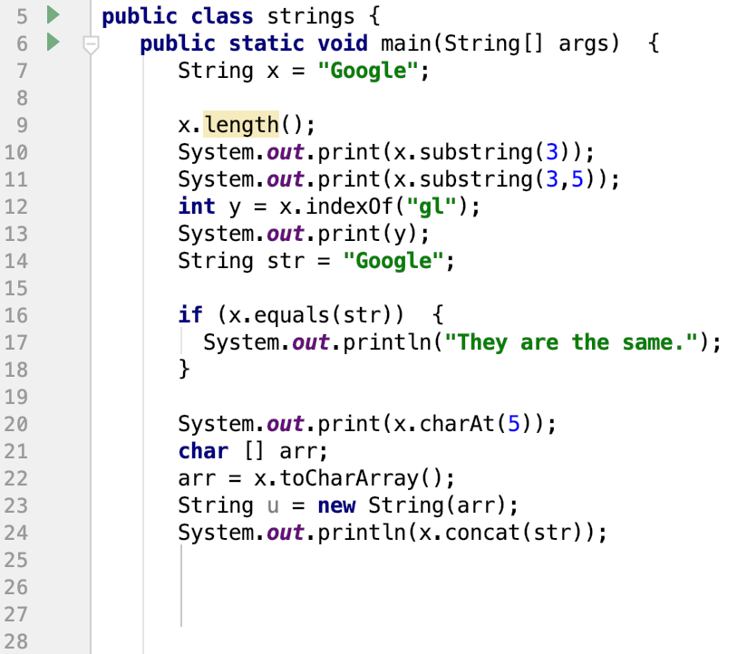The picture below shows how to print out a String, while using the substring method. This is the method you can use if you want to utilize a for-loop, in order to access each character in the String.
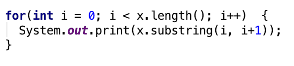The final piece of code is just an example to help display a combination of methods that can be used on Strings. This piece of code does employ some understanding of methods, but can be done without using methods. The goal of this code is to take a string and take the last n letters in that String and repeat those n letters n times. The code below shows teh implementation behind that problem.
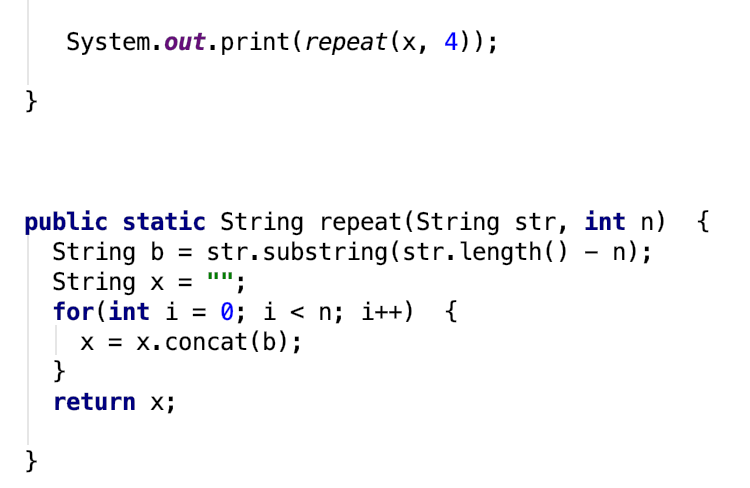
Methods
The video below will give you a brief introduction into methods.
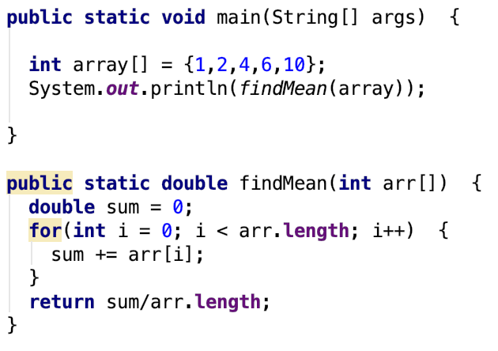The pciture below shows the syntax behind methods. Methods are blocks of code that take in a specific parameter in order to manipulate or carry out a specific task. In order for a method to run, they have to be called upon. This is shown in the picture above where the function findMean is called within the main method. Methods are important because they provide structure to your code.
ArrayLists
The video below will provide a brief introduction into ArrayLists. ArrayLists is a resizable array in Java that is capable of storing objects. An ArrayList is much more versatile than an array because elements can be removed and added from an ArrayList.
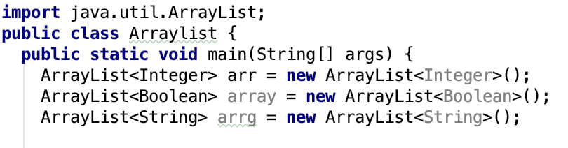 The video above shows the 2 key components of the arraylist. First, in order to use an ArrayList you must import java.util.ArrayList. The next lines show how to declare ArrayLists depending on the data type they contain. It is important that the first letter in the data types are capitalized because an ArrayList stores objects. That is why there are parentheses after the declaration. 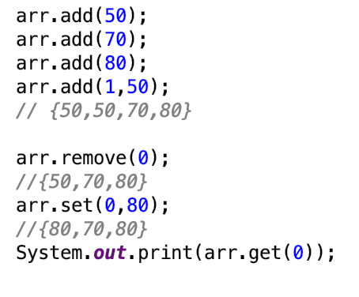The 6 main methods associated with ArrayLists are shown above. Each method will be broken down below.
Add Method: The add method can be used in 2 different scenarios. The first line shows the add method adding a value into the array. In this case the value will always be added to the end of the array. The second type of add method accepts 2 arguments. The first argument represents the index and the second argument represents the value. As a result, the value will be added to the specified index in the ArrayList and all the values at or after that index will automatically shift to the right.
Remove Method:The remove method takes in one parameter. The parameter within the remove method refers to the value in that particular index. The method will remove the value in the index and shift all of the values to the left.
Set Method:The set method allows you to change the value of a specific index. The set method requires 2 parameters, the first parameter is the index we will be accessing and the second parameter is the new value that will be placed into the index.
Get method:The get method allows you to access a specific value in an index. This can be useful when printing a specific value from the ArrayList.
One of the methods shown in the picture below is the ArrayList.size() method and is the equivalent to the functionality of array.length when we were doing arrays. It is important that when traversing through an ArrayList you use the size method.
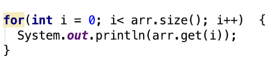
Objects and Classes
The video below will provide a brief introduction into Objects and Classes. Classes and Objects have any impact on all the code you write in Java. The object is something that has features and is made up of data and variable input. The class is what we use in order to create those objects. The video below will provide you with a basic understanding of these concepts.
An object would be a car, because there are specific attributes that define a car such as brand, type of fuel, or type of car.
Below is the syntax used for a class. In it we see syntax known as setters and getters. This process is used in encapsulation because we want to hide what we are doing from the user in the case that we are handling sensitive data such as password or ID number. This makes sure that our data can only be accessed within that particular class. In this scenario, the get method will return a value or output and the set method will allow you to change or set a value.
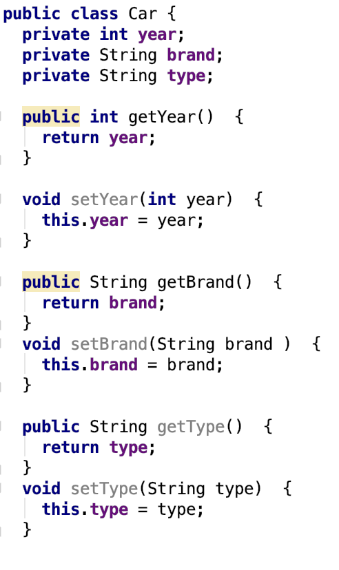The picture below shows the main method, which is in a different class, and how we can access and manipulate an object when we are operating in a different class.
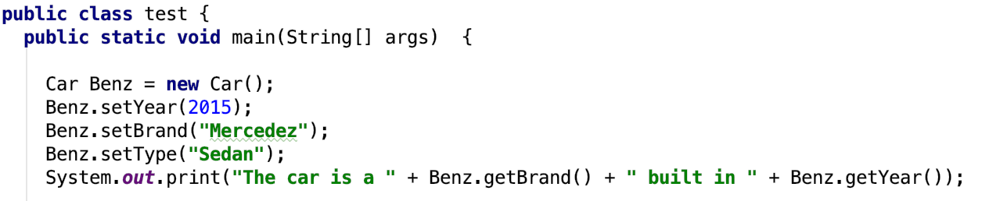The picture below shows the syntax behind a constructor in the Car Class and the syntax we will use in the main method to create a car object. A Constructor is used to initialize an object, and it has no return value which makes it easier to set initial values for an Object. In the main, you will create an object using the constructor.
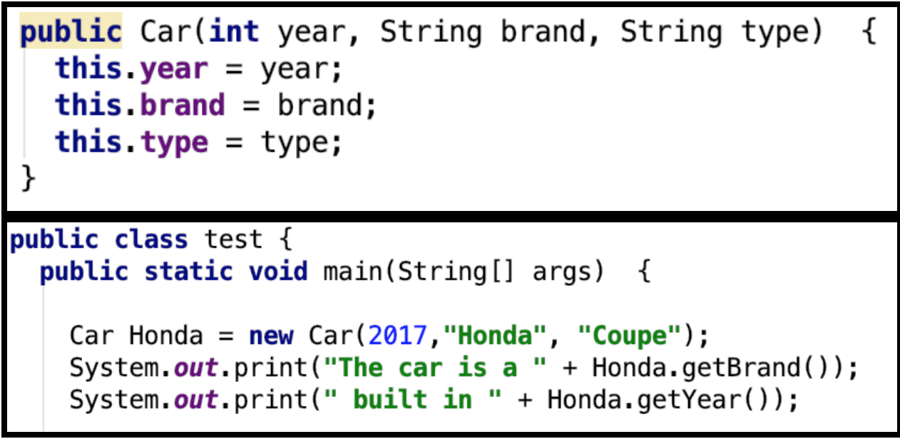One thing you will see in your homework is the use of methods within a class that you will call in your main method. The syntax for how to call the method in your main and how to set up the method is shown below.
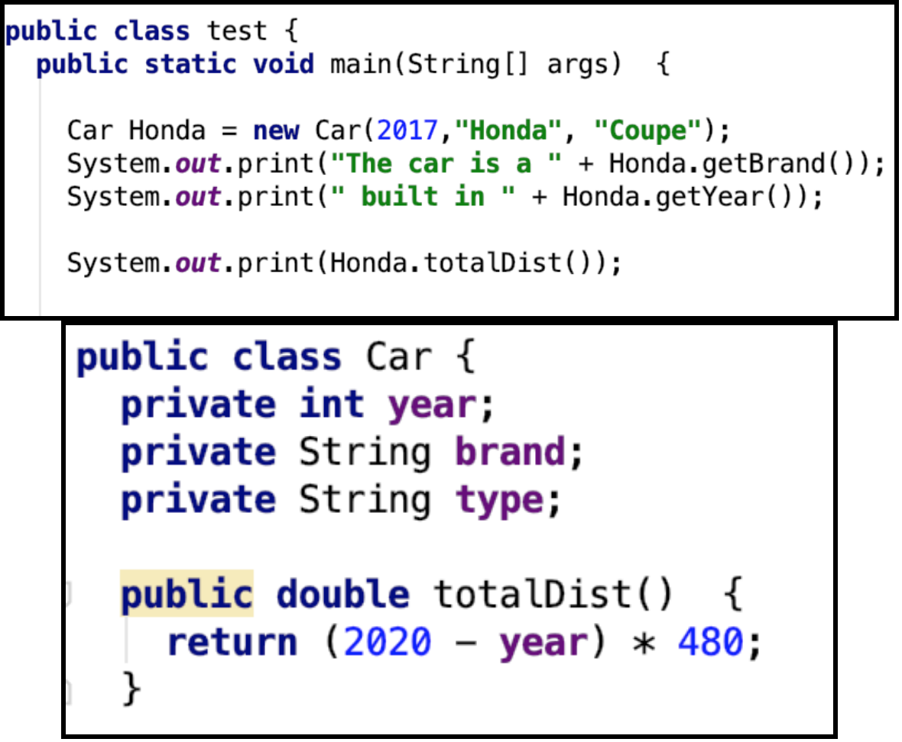
Inheritance
Inheritance is one of the main subsets of Objects and Classes. Inheritance is the process of one class taking on the properties of another class. The class that inherits the properties of another class is called the subclass, and the main class who has its properties and methods being inherited is the super class.
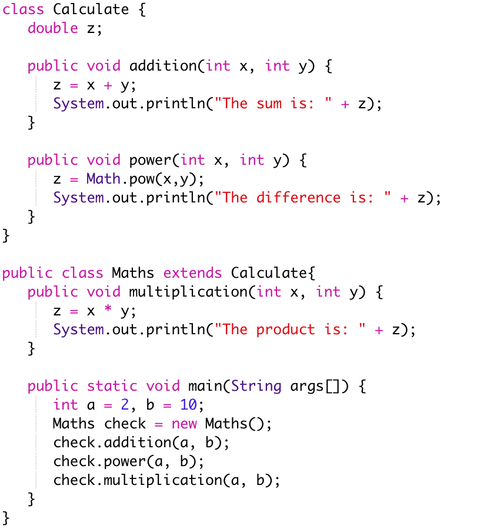What you see above is the implementation of code in order to show the syntax behind Inheritance. Inheritance is denoted by the keyword extends. The Calculate class is the parent/super class and the Maths class is the child/sub class. This means that the object in the Maths class inherits the properties of the parent class, which means that even if we create an object in the Maths class it can still access the methods in the Calculate class. However, there is one thing to note if you create an object from class Calculate you cannot invoke the multiplication method, because the multiplication method is only part of the child(Maths) class. This means that the parent class cannot inherit methods and properties from the subclass.
Another keyword you will see in inheritance is super. This keyword is used when you have a method with the same name in both the parent class and sub class, but these methods have different return values or print statements. If you want to invoke the method of the parent class you use the keyword (super.) before the method name.
Multi-Dimensional Arrays
Multi-Dimensional Arrays are known as arrays within arrays. Just like arrays, multi-dimensional arrays start off at index 0.
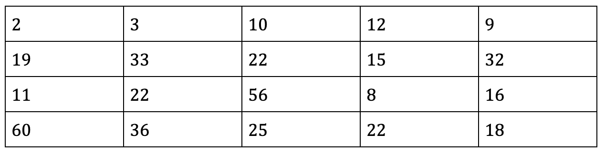The picture above is meant to show a visual example of a 2-D array. The 2-D array is defined by the number of rows and columns so this array would be a 4 x 5 array because there are 4 rows and 5 columns.
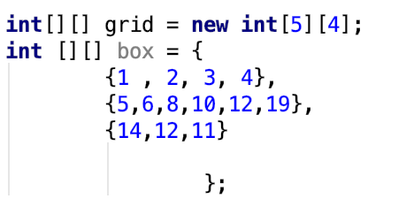The image above shows how to initialize a 2-D array. One of the important things to note with a 2-D array is that not every row will have the same number of columns. As you can see with the 2-D array called box there are a different amount of values in each row. However, when we use the syntax box.length the result will be the number of rows in the 2-D array.
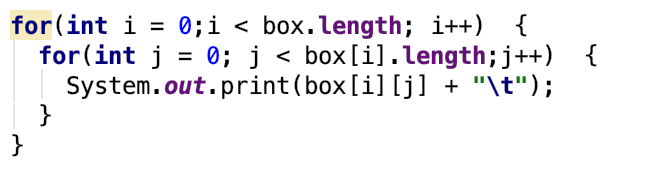The picture above shows how to traverse through a 2-D array. In the picture we use the nexted for loop, which is a for loop within a for loop in order to traverse through the grid. In the second for loop, we use i < box[i].length. This will give you the amount of columns in the row, and it is safer to use this syntax, because as mentioned above there are certain cases where the 2-D array may not have the same number of columns from 1 row to the next.
Binary Search
Binary Search or linear search is a well-known algorithm used in Java that takes an array that has been sorted and finds a specific value within that array by shrinking the search interval.
The goal of binary search is to optimize the search process. There is always a chance that the number we are looking for is at the end of an array, and binary search creates a faster method to find this number.
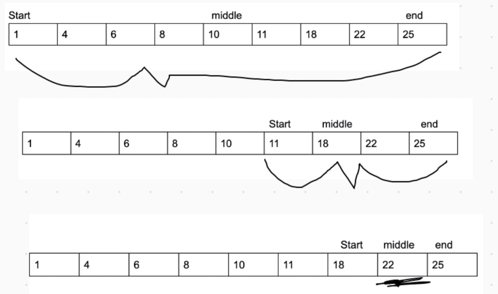The picture above shows a visual example of binary search when we are looking for the number. As you can see the search interval is growing smaller, which is how we find the number that we are looking for which is 22.
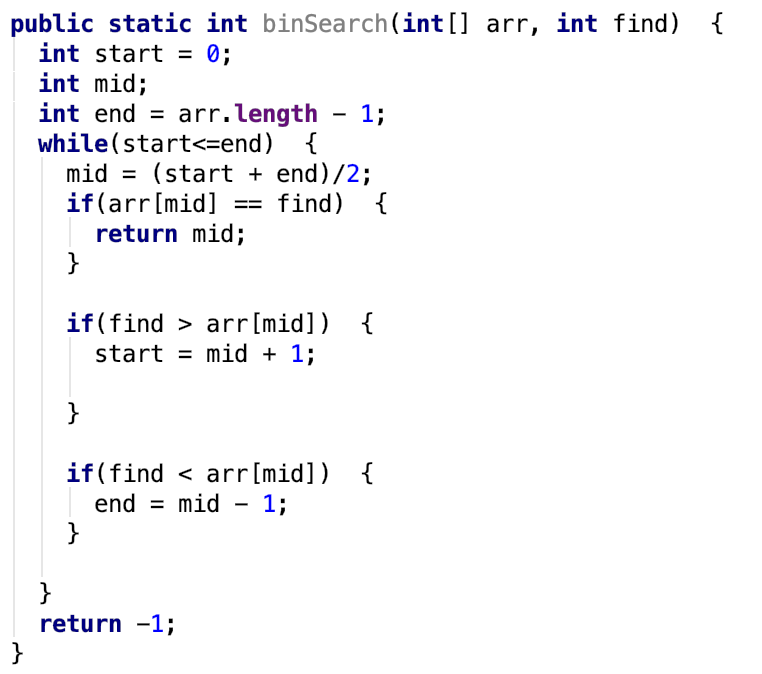The picture above shows the code needed to execute the binary search. This way is through the use of a for loop, and in our syntax the value of start and end change depending on where the number is located. One important thing to note is that in order for binary search to be used the array we are using must be sorted.
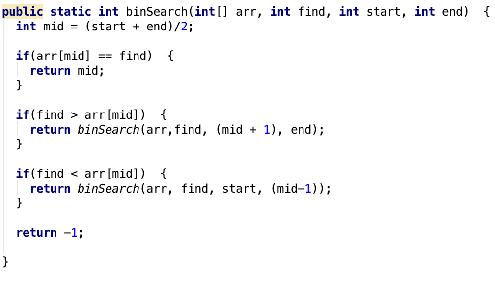The picture above is an example of code that can be written for the recursive function in order to perform the binary search. The base and iterative case allow for the program to locate the value.
Sorting
Sorting is a concept we touched on in the previous section, but is slightly more complicated. The process of sorting utilizes code in order to arrange data.
The whole point of sorting is to make sure we can organize our data, but a big part of sorting is optimization. In order to sort we use algorithms. There are many algorithms that are widely used, but in this lesson we will go over the 3 you will see the most often. These algorithms are created in order to optimize run-time and memory, making it easier for your computer to run these programs.
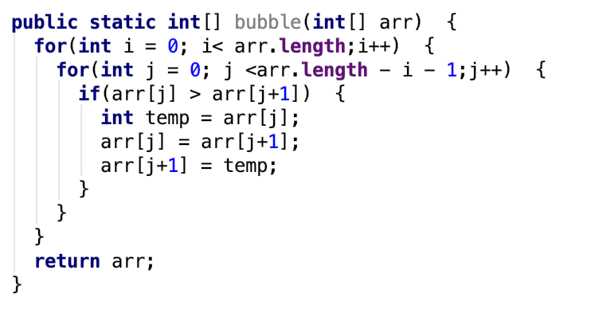Bubblesort is the simplest sorting method we will see in Java. Bubblesort looks at 2 adjacent numbers in an array and swaps them if the second element is less than the first element. The program will keep going through this list until it doesn't have to swap any more values.
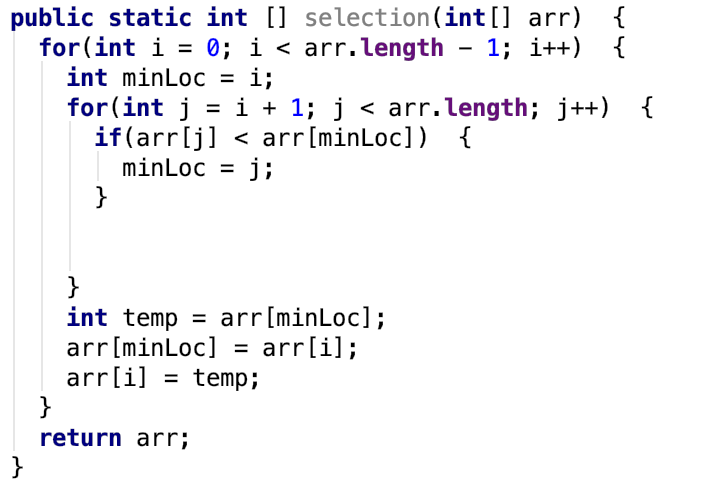Selection Sort is the more common sorting method used by students. In a selection sort we have the original array and the new, empty array. We go through the original array and find the minimum and take out that value from the original array, and put it into the new array. Then we continue this process until all the values in the original array have been moved and sorted in the new array.
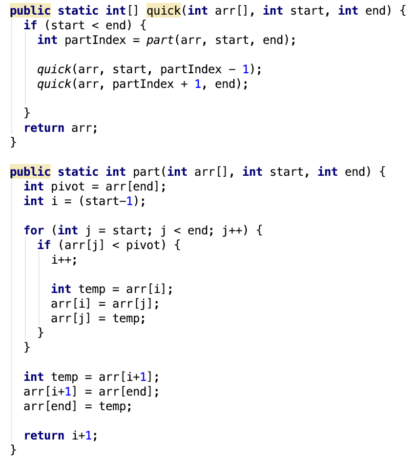The final sorting method we will be going over is the Quicksort. The quicksort is the most optimized algorithm out of the 3 we are learning in this section. With this method of sorting we take a specific/break point in the list and we determine all the values that are greater and smaller than the value in the break point. The Quicksort method is built around this break/pivot point, and in the code above we use the recursive implementation of the Quicksort. In the implementation above we use the last value in the array as a break point, and it is recommended that you use either the start or end point as your break point to make it easier to manage the code.
Recursion
Recursion is a subsection of methods, and involves calling a method within that same method.
The key for understanding Recursion are 2 pieces. The first piece is the base case. The base case is the stopping condition or the statement that tells the program when to stop. The second piece is the iterative step, or the part that tells the program to keep progressing.
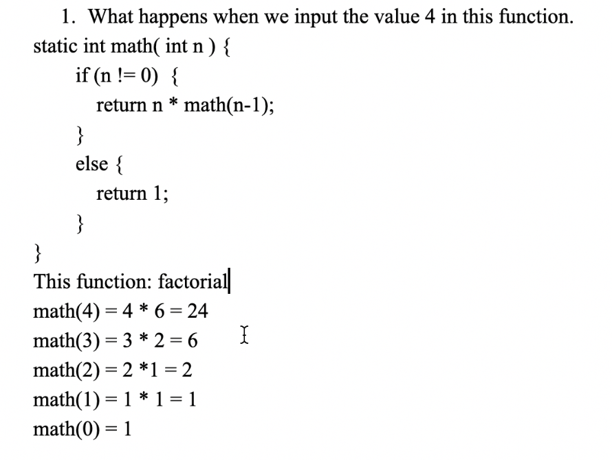The above picture shows a step-by-step example of how to understand a problem centered around recursion. It goes line by line to understand each step performed by the program.
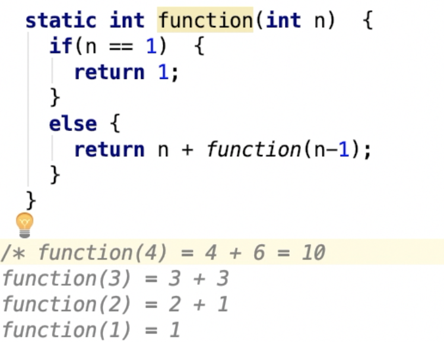This would be an example piece of code that would print the sum of numbers from 1 to n. In this case n would be 4. This code would progress until the base case of n = 1 is reached.
Binary Math and Hexadecimal
This section will cover a miscellaneous topic covered in AP Computer Science, which is the topic of hexadecimal and binary numbers.
Hexadecimal also referred to base 16 numbers are represented by characters from 0 to F. Binary is representing numbers and values through 1s and 0s. Decimal is the common set of numbers we see in everyday life such as 10, 100, and 4500.
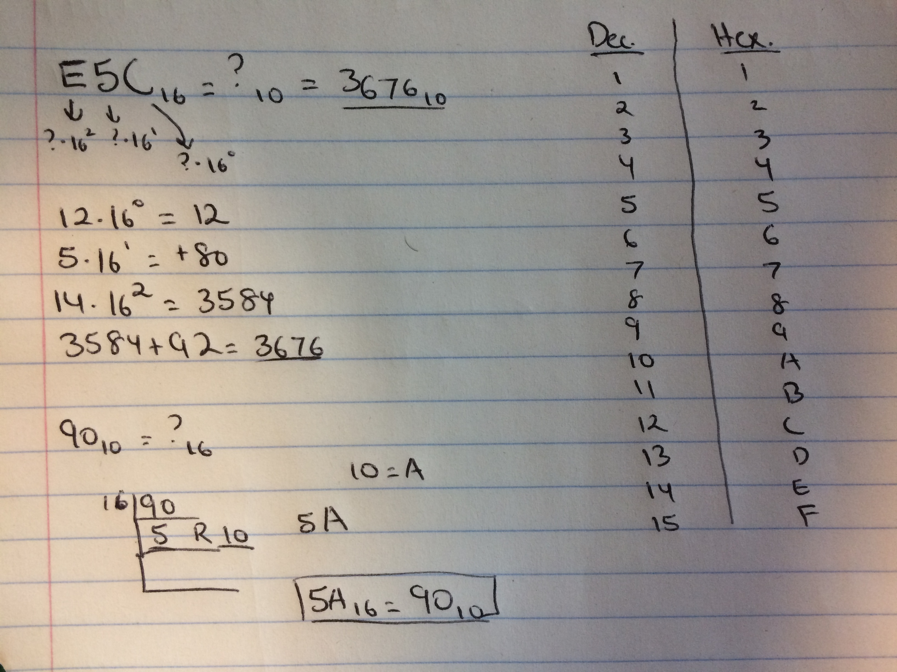The picture above shows the process of converting hexadecimal to decimal(top), and decimal to hexadecimal(bottom). In the top problem we are turning hexadecimal into decimal. When doing this we have to remember that each individual value is some value multiplied by 16 to a certain power. You always start at 16 to the power of 0 for the rightmost value, which in this case is C. Then you use the table on the right to see which value is associated with C(12), and you multiply 12 by 16^0. Then you move to the left to the next character, except this time we will be multiplying the value represnted by 5 by 16 to the power of 1. If we continue this series we will get 3676. When turning any base in this case base 16 to decimal, you keep dividing until the number at the bottom left of this operation is less than the number you are dividing by. In this case the bottom left number is 5, which is less than 16 so we know that this is the stopping point. Then we record every number from that 5,so we go to the right and then go up and record all the remainders. In this case there is only 1 remainder(10) so we have 5 and 10. Now we have to represent the 5 and 10 in hexadecimal so we get 5A.
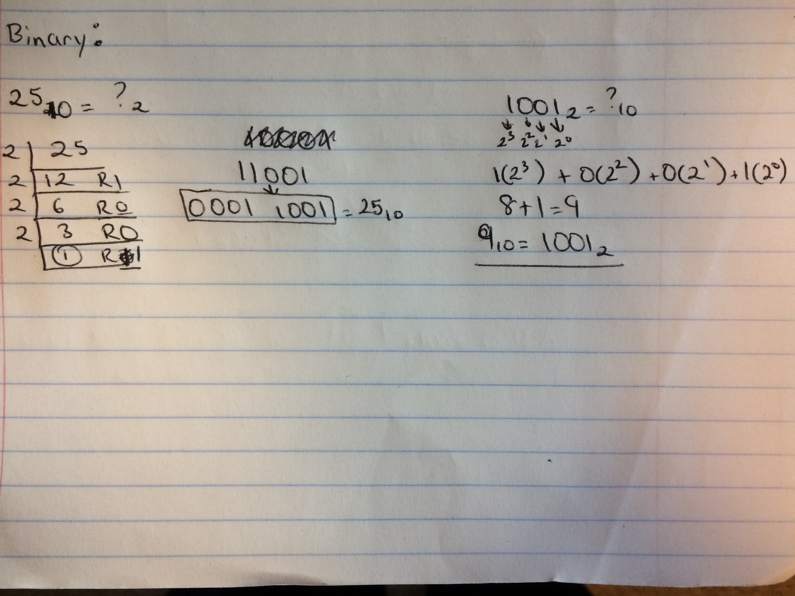Turning binary into decimal and vice versa is similar to what we did above. For the left problem we are turning 25 in base 10 to binary. Since we are converting a decimal into another base we take the number given and keep dividing by the base we want to convert it to. Since binary is base 2, we keep dividing 25 by 2 until we get a quotient of 1. As you can see in the chain we stop at 1 and we record 1 and all the remainders that came before getting that 1. In this case it is important to note that 0 is a remainder and Must be recorded. When going from binary to decimal, we know that the rightmost number represents 2 to the power of 0. That power increases by 1 for each numbers to the left. This scenario is much easier because only the spots that contain a 1 are recorded so we only have to add 2 to the power of 3 with 2 to the power of 0, because those are the only spots where there is a 1. In binary there are only 2 possible values, that being 1 and 0, so we don't have to worry about any extra values such as those in hexadecimal.
Final Thoughts
We hope that these videos and information was helpful. Thank you so much for your cooperation.
There are many resources you can still practice on for the AP Computer Science test. I also recommend using codingBat and solving the problems on those websites as well.